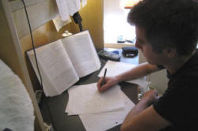

Unit 6: Observing and assessing

On most courses, the observation and assessment of teaching lies
at the heart.
If that is not true for your course right now but you have designs
on training more widely on courses leading to recognised
qualifications, the art (not science) of observing, assessing and
supporting teaching behaviour is the most important skill you can
acquire.
It's also the hardest.
 |
Two purposes, two audiences |
There are two fundamental forms of assessment and they are distinguished by their purposes and their audience.
 |
Type 1: support and enhancement |
This is characterised by what happens in a lot of good teaching
institutions.
Someone, probably a trainer like you or an academic manager who is
also a teacher trainer, arranges in-house observations for all
teachers on a regular basis.
There is not supposed to be any assessment component to these
observations and the observer's sole function is to act as an impartial
viewer
seeing what is going on in the classrooms and, sometimes, maintaining standards.
A secondary function for less experienced members of staff is also a
training exercise to suggest ways to improve and develop techniques
and procedures.
In some organisations, where the majority or a sizeable proportion
of the teaching team is inexperienced, these sorts of observations
may become solely training exercises and then they tend towards Type 2
observations.
In
Unit 3, some consideration is given to the differences between
in-house programmes for experienced teachers and those designed for
less experienced or newly qualified teachers.
In terms of the audience for any feedback, what may also happen is that the reports on these observations may
find their way into the management's in tray and be appended to a
staff record. Then it's assessment, not support.
In all cases there may well be a set of criteria or a definition of
the areas of teaching behaviour that form the structure of any
comments, reports or feedback sessions but that is not always the
case and the agenda may vary according to what the teacher being
observed is interested in investigating.
There is much more later in this unit on what structure(s) reports
may take.
 |
Type 2: assessment and evaluation |
On formal teacher training courses which lead to recognised
qualifications, observation is almost always assessment first and
support second.
Observations like these are carried out by trainers who have
themselves been trained in observation and the teaching is assessed
for all participants against a standard, unvarying set of criteria.
Ideally, the observer-assessor does not deviate from the criteria
and secretly invent new ones but that has been known.
The support element of observation and feedback on such courses is
often confined to advice and training concerning how better to meet
the criteria in future.
Even on courses which contain teaching practice of some kind but are
not externally certificated, a similar process of criterion
referencing is often in place. In these cases, however, it is
possible to reverse the ordering and put support before assessment
although there will almost always be a large element of the latter.
On recognised courses, the criteria against which assessment is made
are available to both the assessor-observer and the
candidate-participant but on other courses this may not be the case
and the criteria against which one is being assessed are not
transparent. Such unfairness is thankfully rare.
The audience for the assessment records is threefold: the course
participant, the institution and the training team and any
externally accrediting body.
These differences are not digital in an either-this-or-that way because the forms of training that are possible live on a cline from solely assessment to solely support and help. Like this:

It does not take a great deal of imagination to see how easy it
is for support to slide imperceptibly into assessment and for
assessment to contain a large element of support but the distinction
is still a valid starting point.
Your simple first task is to decide what sort of observations you
will carry out next (i.e., where are you on the cline). That's somewhere to start and gets some
of the wood out of the way of the trees in what is a complex and
challenging area.
 |
Criteria for observation |
Whatever your role and the mix of support and assessment at which
you are aiming, you need to be more than a casual observer, you need
to be an active, if unmoving and silent, participant.
This means you need a set of criteria of some kind which divides
teaching behaviour into appropriate categories and allows you to
make notes and structure the observation itself and the feedback you
give, both written and spoken.
There are probably as many sets of criteria as there are people
observing teaching and you may need to develop your own.
A good starting place is the lists of criteria developed by external
accrediting bodies in the field of teacher training and education.
To see what they demand, try these links (new tabs for all):
| CELTA and Delta combined | This is a combined document which just has the list of planning and teaching criteria taken from the documentation provided to candidates and centres by Cambridge Assessment English. There are no helpful explanations of what it all means in this document but it's a useful check list to edit and amend. More detail can be accessed from the next two links. |
| CELTA teaching criteria | This is the guide in the CELTA section on this site to meeting the teaching performance criteria on the most widely taken initial training programme. If you are not training for CELTA but are seeking to train and support the very inexperienced, this is a good place to start. You will probably need to edit and amend the list to suit your setting and your aims. |
| Delta teaching criteria | The Cambridge Delta course is designed for experienced teachers and has a well developed and clear set of criteria used by both trainers and external assessors. If you are working with more advanced and experienced teachers, this is a helpful starting point, even if the aim is not an externally accredited qualification. This link takes you to the index to guides which examine the criteria and what they mean section by section. |
| A summer school observation form | This link takes you to a downloadable document used by an experienced teacher trainer faced with observing, assessing and supporting quite inexperienced teachers operating with teenagers, mostly, on a summer-school programme in the UK. It is a helpful categorisation of the areas to consider and give feedback on. The observer makes notes on the form, types them up on a clean copy and then it is used for feedback and as a record to take away. |
Your mission, should you choose to accept it, is to take either or
both of the first and last documents in that list and amend them to
focus on what you want to achieve when you are observing and how you
are happy giving feedback.
In particular, you may like to delete whole sections and remove
references to course regulations and so on. You will certainly
be justified in removing reference to anguished and incomprehensible
terms such as appropriate(ly).
Planning |
It may not be within your brief to support, assess or give feedback on planning at all. You may also feel that asking people on an in-house support programme to produce lengthy and detailed plans is not going to help them engage with and be motivated by the programme itself. Those are judgements only you can make but there are provisos:
- Some insight into the teacher's thought processes in terms
of what was planned is a useful way of helping people identify
and articulate the aims they set out to achieve and the
objectives they had in mind. You may feel that these data
will become clear as the lesson progresses and the feeling may
be justified. It is, however, not always the case.
If something goes well, is it down to good planning, good
management or both? If something goes badly, is it the
result of poor planning, poor management or both?
It is not always a simple and obvious matter. - Many teachers hardly plan at all and it is helpful occasionally to force their hands so that they recall what it is that they are trying to do and are reminded that a good teacher can teach well with or without a good plan but a poor or inexperienced teacher can't. In both cases, poor or no planning usually results in poor and incoherent lessons.
- Planning sessions on any teacher training courses are ideal opportunities for a bit of collaborative work and mutual support and feedback from peers. If you have taken the trouble to design planning sessions into your course, it seems perverse not to ask people to apply the skills they have won.
If you are training on a course leading to an accredited
qualification, there will usually be a set of criteria to apply to
planning documents and there may be a pro-forma lesson plan for
people to complete.
There is plenty of guidance, advice and exemplification in the
sections on the site concerned with preparing for CELTA and Delta
(links on the left). There is also a pair of short guides to
lesson planning for inexperienced teachers which you can open in a
new tab from
here.
On an in-house or less formal course, a simpler form is often
appropriate and if you would like an example, one is available from
this link.
If you do decide to include the quality of planning in your observation programme and feedback routines, and have asked for a more detailed lesson plan to assess, here's a short checklist:
- What (if any!) characteristics of the learners has the teacher borne in mind?
- Do all the stages target some of the aims and objectives?
- Are the stages coherent with a rising level of challenge (see Unit 4 for some consideration of cognitive load)?
- What materials have been chosen?
- What interaction patterns have been planned?
- What's the teacher's role at various stages?
- What are the learners going to achieve?
- How will learning be checked and made clear?
Input into the planning process can take a variety of forms but essentially it can be:
- Part of a plenary input session in which the purposes and form of planning are made clear before people collaborate on designing lessons or parts of lessons.
- A small-group or one-to-one seminar / tutorial in which individuals talk through the plan and explain its rationale and structure. (See Unit 5 for some consideration of tutorial structures.)
Planning is the stage at which teachers can (or should) match the
procedures and techniques they are using to the underlying
principles and hypotheses from which they work.
A useful question to ask all teachers at this stage is:
Which major
theories of learning and language and which interesting hypotheses
have informed this plan?
If the answer is:
Err, um, err
or a blank look, you may need do some training.
 |
Teaching |
Some teachers simply do not like to be observed but others
welcome it and some are more or less grudgingly supportive of the
idea because they know it's helpful.
It is worth reminding the first and last groups that you as a
trainer are being observed by other teachers all the time (well, at
least when you are at work) and most people in most professions are
continually under observation from the people with whom they
interact (managers, customers, clients, the general public,
colleagues etc.).
 |
Etiquette |
In many cultures the conventional etiquette is for guests to
leave their shoes at the door.
As an observer, you are a guest in someone else's domain and should
behave with due courtesy. This does not mean taking off your
shoes but does mean:
- Being discrete and refraining from interrupting
- Staying out of the learners' eye lines
- Arriving on time and not overstaying your welcome
- Being silent
- Refraining from groaning, grimacing and eye rolling
 |
Tasks for observers |
There are guides on this site both
for Academic Managers who are charged with observing teachers
and for
participants on teacher-training courses who are observing as
part of their professional development. The following is
extracted from those guides.
This is particularly relevant if you are not preparing people for
formal external assessment but are operating in a support role
in-house with teachers at any level of experience.
In the latter case, you have the opportunity to meet with the
teacher(s) and collectively decide on appropriate tasks to
undertake.
Here's a brief run-down of some of the most important ideas.
 |
Using charts |
There are lots of ways to use charts when observing teaching. Charts allow a quick way to record data, can be very informative and can later be used to compare the different ways different teachers deal with things like apportioning time, gaining and maintaining attention and groupings. Charts are, however, rarely useful if you are attempting to assess effectiveness and for that undertaking, you need a form and a useful and applicable set of criteria to work from. There is a bit more below under using forms.
For example:
If you want to measure the amount of teacher vs. learner talk and map it
against your estimation of energy levels in the classroom, you could use
something like this:
Start with a blank chart and three coloured
pens to play with while the lesson progresses. You can also use a set of blank circles and make pie charts if that's
easier. Clearly, you can vary the parameters to suit what the
teacher or you want(s)
to be the focus.

Then, in feedback, you and the teacher can compare what you both perceived to be happening with what you recorded and spot and discuss the differences.
A reasonably simple alternative type of chart is something like this which is intended to focus on error correction and instruction checking but could be used for all sorts of other purposes such as concept checking, nomination of learners and so on. You place a bar on the line where you believe it should go and then, later, discuss the findings with the teacher.

For time apportioning, an effective chart type is the pie chart which may look something like this:
Again, a comparison with the teacher's planned timing can be informative especially if you find wide variations.
Interaction patterns are also candidates for graphical representation. For example:

This sort of chart quickly shows how equitably attention is shared and who are the most forthcoming learners etc. It will soon become messy if you try it for the whole lesson so is best reserved for plenary sections of the lesson or for short snatches only.
 |
Using forms |
Charts and so on are mostly for information. Their use is a
data-gathering process not assessment of any kind.
At other times, you will be in some kind of assessment mode.
A generalised, institution-wide form is often what is used and
the categories will probably be drawn from an externally overseen teacher
training programme. There are examples linked from the table
above of the sorts of categories and criteria you can select from if
your choices are not constrained by an examining body.
Whatever you use should be open and transparent. There should be no hint that the form the teacher
sees is different from what you actually use.
If you are concerned to target the observations more narrowly, you
can invent forms which are more
focused.
Here are some examples. The focus will reflect your and your
course's current concerns:
Factors affecting learning
| Category | Positive | Negative |
| The environment | ||
| The teacher's roles | ||
| The task types | ||
| Grouping | ||
| Feedback form |
Lesson shape
In the columns
- note what the learners were doing (e.g., working in pairs to solve a problem, making lists individually, listening and taking notes etc.)
- note what the teacher was doing (e.g., presenting new data, monitoring, sitting out etc.)
- note what sort of activity this was (e.g., skill getting, awareness raising, skill using, testing, consolidating, free practice etc.)
| Time | Student activity | Teacher role | Activity type and aim |
| Minutes 0 - 10 | |||
| Minutes 11 - 20 | |||
| Minutes 21 - 30 | |||
| Minutes 31 - 40 | |||
| Minutes 41 - 50 | |||
| Minutes 51 - 60 |
If you are confident in using the categories, you could add a column on the right to note the level (1 – 6) of cognitive challenge taken from the descriptors in Unit 4 of this course.
Instructional language
| Activity | Framed? | Clear? | Concise? | Checked? | Demonstrated? | Repeated? |
Framed in this case means whether the end of a phase and the beginning of the next was signalled and how this was done. This is sometimes referred to as transition routines. The other columns should have some information about how things were done, not simply whether.
Questioning
| Question type: | Question concerned ... | Learner response was ... | Aim was ... |
| Closed | |||
| Open | |||
| Display | |||
| Communicative | |||
| Procedural |
To remind you:
- closed questions demand a Yes / No / Don't or Maybe answer only
- open questions are often formed with how or why and require a more elaborate (and less predictable) answer
- display questions can be of any sort but are those to which the questioner knows the right answer and the person being asked knows that the questioner knows the right answer. They are often concept-checking or knowledge-checking questions.
- communicative questions are authentic in the sense that the questioner does not know the right answer and cannot predict it
- procedural questions are often instruction-checking questions and are designed to aid classroom or task management
Exploiting learner output
| Learner output: | Concerned | Relevance | Teacher response ... | Effect ... |
| Planned | ||||
| Spontaneous |
In this table, distinguish between learner output that was in some sense planned (i.e., in response to the teacher's questioning and focused on the lesson's target(s)) and that which was unplanned and emerged as the lesson went on. Make a note about what the output concerned, how the teacher responded and what effect the response had.
Dealing with error
| Error type | Error was ... | Corrected? | Peer correction? | Self-correction? | Teacher correction? | Outcome? |
| Referential | ||||||
| Syntactical | ||||||
| Phonological | ||||||
| Stylistic | ||||||
| Interpretive |
You can of course adjust any of these little forms to make them
appropriate for any stage in the training process so your
observations and feedback are linked explicitly to the input people
are getting.
Hunt down the guide to error for an explanation of the categories if
they are obscure to you.
 |
Best practice for whom? |
There is no profession-wide definition of best practice. There is,
in fact, no academic consensus concerning how people learn languages
and how best they should be taught them.
We can, naturally, and usually do, explain theories of learning and
hypotheses about activities which lead to learning and make some effort to
assess the likelihood that they are on the right track but we do
not, yet, have definitive answers.
You may have quite strong views concerning what is effective and
what is not and similar prejudices concerning best practice in the
classroom. If you do, a little more humility is called for.
 |
The hurricane in a scrapyard |
It has often been noted that is possible that a
hurricane blowing through a scrapyard will assemble a working
airliner from parts picked up a flung randomly around in its path.
That is, however, an unlikely outcome because there are nearly
infinitely more ways that the parts can be assembled which do not
form an airliner than the one that does.
In other words, there are more ways to be wrong than right
in principle.
Novice (and not so novice) teachers continually seek out
novel and interesting ways to do things the wrong way simply because
there are more ways of doing something wrong than right. However,
there is more than one way to be effective, even if what is done
runs counter to our own prejudices or preferred understanding of
good practice.
Teacher trainers are not tasked with telling people what the
right way is to do something but to open up possibilities and give
people options.
There should be no presumption of a monopoly of
knowledge concerning how things should rather than can be done. There is
very little solid evidence to support quite a lot of received
wisdom in the field and we should acknowledge that. This includes,
for example, the efficacy of drilling, delayed correction, inductive
learning and much else.
We need, accordingly, to leave most of our preconceptions at the
classroom door and try to judge whether what is happening is
achieving its ends.
Whether the ends are worth achieving is another matter to do with
planning (see above).
We can address matters of practice at different levels and in different ways and that is what we will do here.
-

- Novice or very inexperienced teachers need clear guidance rather than
being told somewhat vaguely what they could (=should?) have done but
that should not be at the expense of making assertions concerning
the efficacy of one approach over another.
Setting out advice and feedback in the form of imperatives do this, do not do that reinforces the air of omniscience.
There are times when it is fully appropriate to tell novice teachers not to do something (e.g., give instructions vaguely and after the task has been distributed) but there are other times when advice needs to be far less dogmatically expressed.
Teachers at this level of experience know (or should know) that they have much to learn and do not find advice particularly threatening, especially at pre-service level, simply because they know and you know that they are not supposed to know how to do things.
If inexperienced teachers are persuaded that doing something in one way, which may not be appropriate for their aims and setting, is invariably wrong, they may lose the opportunity to deploy a procedure in other settings where it is appropriate.
For these sorts of teacher:- you need to be something of a generalist because neither you nor they know now what they are best at and where they need advice.
- you need to look at their classroom tactics and gently suggest alternatives to any they are using which you think should either be done better another way or are inappropriate to the setting.
- you need particularly to look for things like thoroughness in practice and presentation because typically teachers like this burn through materials too quickly and don't properly exploit what they have.
- you need to limit your ambitions. Most teachers at is level can take on board and act on a maximum of three ideas and bits of advice per observation. Do not give them long lists because that will de-focus, confuse and depress them.
- you need, in feedback, to be absolutely clear and not
hedge with too many comments on what could have been done.
If you mean
A better way to do this is ...
or
This is what you should have done:
then say so. - teachers like this will often welcome positive, constructive feedback and are confused by the presentation of too many alternatives.
- you need to consider carefully what they are capable of doing. You are, no doubt, able to carry out complex and sophisticated classroom procedures using multiple media inputs but, before you suggest they do so, ask yourself whether they have the experience and aplomb to carry it off successfully.
-

- These are usually teachers with some experience post-initial
training who are still learning but can do most things in the
classroom efficiently and automatically. They don't need,
for example, to think about how to elicit, how to drill and how
to set up activities. They may need focus and some advice
concerning what they need to learn before they go on to further
training at diploma level or above.
- before any observation, discuss with them where they feel their weaknesses are in the classroom and then set up an observation that focuses on what they need to improve. Most teachers in this category can identify a range of issues. If they can't, nudge them.
- focus on the data you have gathered and discuss them together, seeking a way forward to improvement.
- set up more than one observation if time permits, focused on the same area to note any changes in behaviour. This way, your observations become part of a development programme.
- Experienced teachers will often be working towards a
recognised advanced qualification such as Delta or the Trinity
Dip. TESOL. They may even be going on to master's degree
level so need handling with a bit of care.
Many are serene and comfortable in what they do and may resent assessment or advice from you.
Teacher training at this level may involve some deconstruction of the teacher's current behaviours before reconstruction can begin and that is a threatening prospect and process for many. This is especially the case with people who have become accustomed to using force of personality rather than technique to manage interactions in the classroom.
People vary and some will be very open to feedback on their performance (especially if it is not all negative).
In many cases, it is appropriate to focus your observation on something the teacher wants to find out and needs an observer, who is not otherwise employed in the classroom, to be a data gatherer.- look for excellence. Many teachers in this category have become specialists at some forms of classroom behaviour. It may be anything from crisp instruction giving to the use of poetry. Whatever it is, try to identify it.
- be alert for negative habits that the teacher may be unaware of. After a few years of doing something that seems to 'work' (however that nebulous concept is defined), some classroom habits can become ingrained. Look for these and mention them, interspersed with positive comments in your feedback. Secretly, the teacher may well be grateful that you have pointed out that they consistently overpraise, talk facing the board or use OK, um as a filler.
- feedback will be much more even in this case. The teacher will know where the high and low points of the lesson were so you are in listening mode. You want the teacher to reflect.
- if your observation was part of an in-house development programme, this may be an opportunity to ask whether the teacher may be prepared to lead a short workshop for the whole teaching team on something they clearly do well. Even if the idea is rejected, the teacher will be covertly pleased that you asked.
 |
Tailor-made feedback and sound advice |
The rationale for all observations is to give sound,
constructive and timely advice. Obviously, some observations will amount to an assessment of a teachers competence
while others are at the support end of the cline.
The teacher, of course, needs to know where on the cline this
observations sits.
 |
Sound advice |
Sound in this context should be taken to mean usable. There is
little point in suggesting a procedure, approach or technique which
is beyond the teachers ability to implement.
For example, while
we may believe that a higher-level class might benefit from some
explicit understanding of the differences between deontic and
epistemic modality, telling a teacher on a
CELTA-level course (or even one, alas, who finished such a course
months ago) to provide that sort of teaching is not going to
produce any instant improvement. However, suggesting to the same
teacher that a lesson is better planned by considering concepts of
obligation and likelihood separately (which amounts to much the same
thing) would be helpful and, much more importantly, doable.
The same consideration applies to techniques, of course. What
you need to look for are, say, three things that this
teacher can do now to make the experience for the learners more
interesting and more productive. Three ideas to take away from an
observation is the maximum most teachers can handle.
If possible, these three ideas should be in separate areas. A short and non-exhaustive list would be one idea in three of these areas:
- Presenting
- Correcting / Handling error
- Classroom management
- Monitoring
- Giving feedback
- Getting Feedback
- Summing up and getting students to focus on what they have learned
- Aims
- Appropriacy of language / skills work
- Level of challenge (usually too low)
- Instructional language
Other categories and areas will be appropriate, of course, providing they are priorities and not peripheral to the teachers behaviour.
 |
Feedback on teaching |
On most courses this will be both oral and written because:
- Oral feedback gives people the opportunity to ask questions, seek clarification, argue, justify and respond but is also ephemeral and often quickly forgotten.
- Written feedback provides the opportunity to read, re-read and highlight essentials. It also makes the process more serious and more formal as well as valuing it (because writing is time consuming and needs to be done with some care). It is also one-sided and uncommunicative
Get the best of both.
We considered the three main categories of teacher above and
we also looked at the cline from fully assessment-based observation
to fully support-based observation.
How the
feedback meeting is handled will depend a good deal on the where the
teacher is and what the observation was intended to do.
Feedback on in-house programmes may be less formal and agenda driven
but a record of sorts should nevertheless be kept for future
reference.
Constructive advice
This term should not be confused with positive. Constructive
advice can be advice to avoid something or advice to do something.
What it is not, of course, is merely critical.
How advice is given needs careful handling if it is to be
constructive.
 |
Oral feedback |
- Formality
This is a semi-formal occasion so make sure you sit facing the teacher wherever the meeting takes place. See Unit 5 for more on one-to-one tutorials and other forms of meetings. - Agenda
We all have our own way of doing this but heres a suggested way to proceed:- Thank the teacher for coming and, if they are giving up part of their time (i.e., they are on a break or its after teaching hours), make very sure the teacher knows you know this and appreciate it.
- Ask for the teachers view of the good and less good
areas of the lesson. Nudge them into identifying the
stages, if they cant think of much and then lead them
through the sections of the lesson. Let them do the
talking. Its not your turn yet. Probe a little
here to encourage self-appraisal (its a key teaching skill)
with questions like
Why do you say that?
How much did it matter?
and so on. - Now its your turn.
- Start with the positives (there are always some) but avoid the use of nice, lovely etc. because these are meaningless terms. Prefer words like helpful, engaging, motivating etc. because those are what you probably mean.
- Now focus on your three main points the ones you want them to work on explaining why they are important and what they should (not could) have done. Make this very constructive and allow them any number of Yes, but interruptions.
- Sum up the three issues and make sure the teacher can do the same you are concept checking, in fact.
- Broaden things out. Ask about the teachers
progress in general on the course vis-à-vis teaching in
particular. Get them to say if anything
is concerning them:
Are you getting enough support?
Are you generally happy with the course?
etc. Make it clear the views are valued. - Draw the meeting to a close by shutting your laptop / putting away papers etc. Make it clear that written feedback will follow (if you dont have it right now). Thank the trainee again for the tolerance and time.
 |
Written feedback |
This should be properly presented, word processed and free from
typos and other errors. It is probably a document the
teacher will retain for a considerable time. They may even
show it to future employers.
We all write differently so these are just general points to
consider.
- Avoid note form and obscurity. Dont over hedge with
I think you could have .
It seemed to me that
etc.
but state things clearly, objectively and unambiguously. - Avoid questions which can have no answer in a written text such as
Have you considered ? - State that the teacher is free to ask you any questions if anything you have written is unclear.
- Keep a copy for your records and, if required, for the institution's records. The document given to the teacher, the one you keep and the one that goes to the institution's records should be identical.
- Make sure the teacher knows what happens to any records and who gets to see what.
 |
Task: Here is a short exercise on what not to say and what not to write and your task is to decide how it could be improved. Decide on your improvements responses and then click on the |
| Critical and unhelpful | Improved, constructive and helpful |
| You need to keep a lid on the amount of
phone usage that's going on in the lesson. |
People using
phones in class is both discourteous and distracting for
others.
This is making your job more difficult so try, for
example:
|
| Consider how you set up pair and group work more carefully
because some people didnt know what they should be doing. |
The first pair-work activity didn't
work too well, did it?
When you set up a pair- or group-work activity do four things:
|
| Make your feedback suit the task the first activity needed
more feedback in detail. |
Think about the type of task you
are using: Is the product or the process important?
If the product is important (like your task ZZ), do thorough feedback so you know if its safe to move on If the process is more important (like your task XX), then monitor it so you can pick up on a few interesting ideas, thank people so that its valued and move on. |
| When you board a
new language item, make sure you show the word class and
stress. |
When you board a new language item, make sure you
show the word class and stress like this:
disparity (noun) and put a |
| At
the end of the first pair-work task, you could have taken a
little more feedback. |
At the end of the first pair-work
task, you needed to take more feedback because:
|
None of this is rocket science. All that is needed is some care to make sure your comments are not obscure and are usable.
 |
Feedback on written work |
If you are giving feedback on written tasks, you are almost
certainly working on a course leading to an externally awarded
accredited qualification of some kind so the criteria you are using
for assessment will be given to you and do not need to be invented.
That makes your life somewhat easier.
Similar considerations apply however in terms of making your
feedback helpful and not just critical.
Here's a very similar task to the last one.
|
|
Task: Here are some unhelpful comments on people written work. Decide how they could be improved and then click on the |
| Critical and unhelpful | Improved, constructive and helpful |
| This is a comma
splice or run-on sentence. |
Run-on
sentences like these make your meaning obscure.
This one needed separating into two, like this: ...
Please see the short article on what they are and how to avoid run-on sentences at https://www.eltconcourse.com/questions/answers/ELT_Concourse_comma_splice.pdf. |
| You could have
given an example of this. |
This comment
needed an example. Without it, it is unclear that
you know what a wh-cleft sentence actually is.
|
| So what? |
This is a good example of learner error in this area but
you needed to comment on what caused it and how it may
affect communication.
Without that, it's just a lone and uncontextualised mistake. |
| Not enough
detail here. |
You needed to say here how you would undertake this in
the classroom. As it stands, the reader cannot see
what you do but only what you intend to achieve by doing
it.
|
| This is not
accurate. |
This is not accurate. The reason that the word
so cannot be used here is due to confusion
concerning whether it is a simple emphasiser (like
very) or whether it means to the extent that.
|
On some courses, it is possible to have the luxury of oral feedback on written work, too, and it may be possible to put it into small-group tutorials. That's useful if it can be afforded.
|  |
Feedback on reading and research |
Some of the feedback you give on written work will, naturally,
also apply to the research and reading the participant undertook to
construct the submitted text.
At other times, however, you may set some reading and research as a
pre-seminar / tutorial task and get the members of the group to
report back to the others concerning what they have read and
researched and how they have understood any implications.
Unit 5 of this course covers the issues with tutorials and
seminars in some depth so here we will confine ourselves to those
which address course content.
Feedback to this kind of task is likely to be oral and come not only
from you but also be encouraged from the participant's peers at the
meeting.
After you have set up the seminar, made sure everyone knows what
it's about and what the outcomes should be, a conventional way to
proceed is:
- Ask each person in turn to give their presentation. If time is limited, make that clear.
- At the end of each presentation, invite other members of the
group to:
- ask for any clarification they need
- make any points they think are relevant
- present any alternatives they can think of
- Now it's your turn. While participants are giving
their presentations, you should be listening for any gaps in
their knowledge or any misunderstandings that seem to have been
exposed. What you need to do is alert people to the times
when they may have read too little or not thought too hard about
what they have read and also to draw in other members of the
group. Now you can ask some questions such
as:
- You said at the beginning that Widdowson suggests that formal language knowledge is part and parcel of communicative skill. Do you accept that he's correct? Does this mean he is suggesting we teach language systems before any communicative activity? What happens to a Test-Teach-Test structure if we do that? Does this sit well with Task-based Learning approaches?
- You have discovered most of the main uses of the present perfect continuous but haven't mentioned iterative aspects. Can you suggest how the form is used for those? Can anyone else explain what is meant by iterative?
- You stated that English doesn't have a future tense. Most learners think the will form serves that function. Doesn't it?
- You suggested, rightly, I think, that how we read is mostly determined by our purposes for reading. What role does the text type play?
- I think you have the main characteristics of theories of
active grammar construction and imitation theory right.
What aspects of research have you found which offer an
alternative view to how people process language?
What do the others think?
and so on.
This is also an opportunity to use turn taking appropriately and the
most useful form of getting someone else's comments and thoughts is
to constrain the topic and select the person whom you want to
respond (and there's
more on this in Unit 5).
You are teaching here but using a Socratic method in part by trying to lead people to a fuller understanding of the topic through a question → response → objection → refined response → question → response → objection process. For more on the Socratic method and an example, see that part of Unit 4.
 |
Self-evaluation |
This is actually not so much self-evaluation as self-training.
Before you begin to train in earnest, arrange a couple of dry runs
to see how you can apply some of the methods above.
If people are unwilling to let you experiment with their teaching
and their classes, record a language lesson of your own or get hold
of a recording of someone you don't know.
It is slightly bemusing that many people have seen fit to post
examples of their teaching on the web and they are readily
accessible via platforms such as YouTube (but rarely models of masterly practice).
Some have been posted by professional organisations and, while not
flawless, are at least professionally conducted.
It is a resource worth exploiting because you can watch the lesson,
such as it is, and apply any number of assessment devices while you
do so.
Then visualise how you would give feedback. There's some
advice on visualisation in
Unit 4 of this course.
When you've done that a couple of times, you'll be better
prepared to do it for real.
You will never get it all right from the beginning (or ever, for
most people) because this is a skill that comes with practice.
Don't forget, too, to apply your own well-practised
self-evaluation skills after a feedback session and ask yourself how
it went, whether you felt that you managed to get the points across
and whether, crucially, you feel that the trainees in question
benefited.
You could, of course, always ask them that.